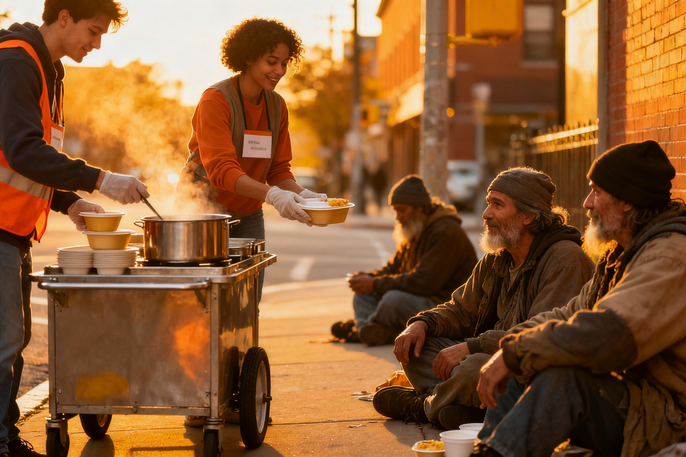
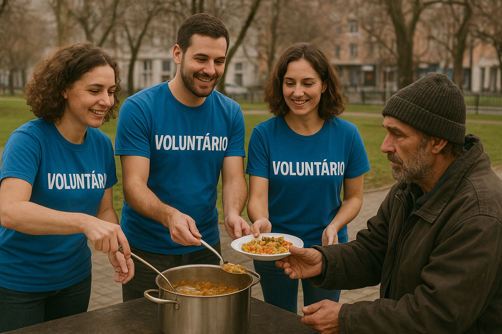

Missão
Promover dignidade e esperança, oferecendo refeições e apoio para moradores de rua, contribuindo para a redução da fome e fortalecimento comunitário.
Valores
- Solidariedade: respeito e empatia pelo próximo
- Transparência: prestação de contas clara
- Comprometimento: dedicação à luta contra a fome
- Acolhimento: valorização e respeito à individualidade
- Sustentabilidade: impacto positivo e autossuficiência
Visão
Ser referência em inclusão social, mobilizando voluntários e apoiadores para transformar semanalmente a realidade de quem vive nas ruas.
Contato
Email: contato@alimentandosonhos.orgTelefone: (11) 99888-7766
Endereço: Rua da Solidariedade, 100 - São Paulo, SP
Galeria dos Eventos

